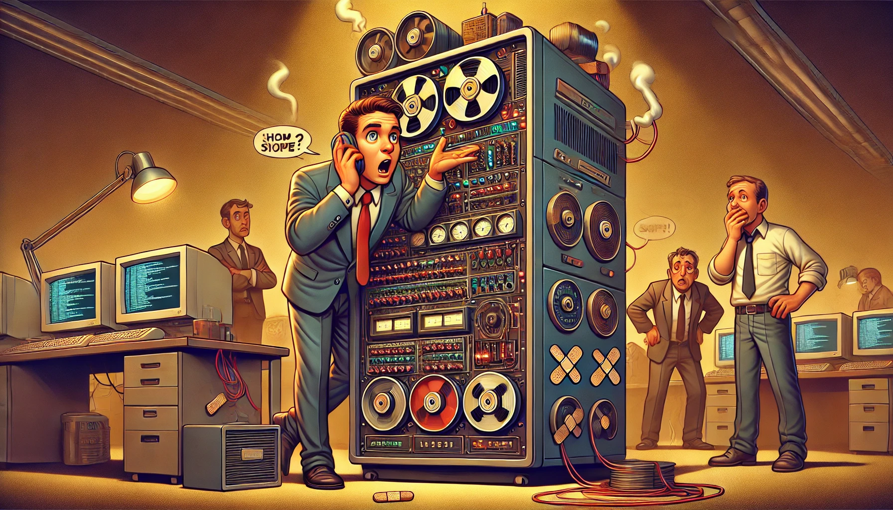
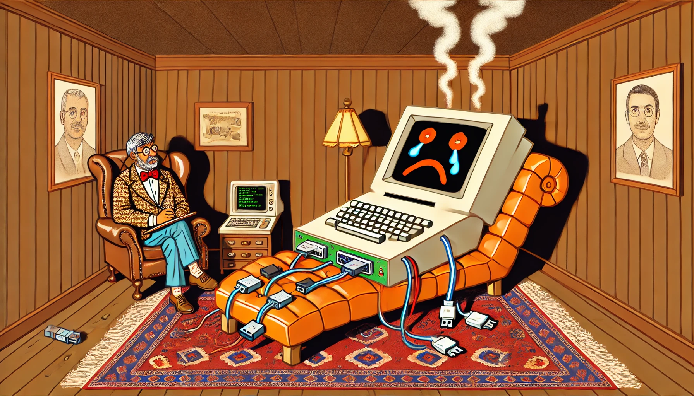

Your Legacy System is Trying to Tell You Something (And It's Not 'Please Reboot')
You know that uneasy feeling when your car makes a noise it’s definitely not supposed to make? That moment when you turn down the radio, tilt your head, and think, “Maybe if I ignore it, it’ll go away”? Well, your legacy system is making those noises right now, and trust me – it won’t go away by itself.
I’ve spent the last 15 years listening to legacy systems whisper (and sometimes scream) their stories. Like that time at a startup when their core transaction system started hiccuping every Tuesday at 3 PM. Nobody knew why Tuesdays – the system had apparently developed a case of mid-week existential crisis. Turns out, it was trying to tell us something important: “Your transaction log is full, and I’ve been tap dancing on the edge of disaster for the past three months.”

Legacy systems speak their own language. It’s a peculiar dialect of cryptic error messages, mysterious performance drops, and that one function everyone’s afraid to touch because “Dave wrote it before he left, and nobody knows how it works.” They’re like that old family member who has amazing stories to tell – if only you’d sit down and really listen.
In one enterprise I consulted for, their system had been running smoothly for so long that everyone assumed it was perfect. “If it ain’t broke, don’t fix it,” was the mantra. Until one day, it wasn’t just broke – it was having a full-blown midlife crisis. The system hadn’t been broken; it had been sending warning signs for months through slowly degrading performance, increasing error rates, and logs that were practically begging for attention.
This article isn’t just another technical guide about modernizing legacy systems – though we’ll definitely get into that. It’s about learning to understand what your legacy system is trying to tell you before it resorts to the technical equivalent of a temper tantrum in the middle of your busiest business day.

So grab your coffee, pull up a chair, and let’s learn to speak Legacy. Trust me – your system has been waiting for this conversation for a long time.
And no, turning it off and on again isn’t always the answer. Sometimes it’s just the beginning of a much longer conversation…
“Houston, We Have a Problem”: Understanding Legacy Code Crisis
Imagine walking into a hundred-year-old house. You know, the kind where every floorboard has a story to tell – mostly through creaking. The electricity works (mostly), the plumbing functions (sometimes), and yes, that weird noise in the basement is “totally normal.” Welcome to the world of legacy systems, where every developer’s nightmares come true, and “it works, don’t touch it” is the unofficial motto.
Why Your Code Base Feels Like That Old Basement Everyone’s Afraid to Clean
Remember that one drawer in your kitchen where you throw everything you might need “someday”? Your legacy codebase is exactly like that – except it’s running your entire business. It’s a place where temporary fixes from 2010 have somehow achieved permanent residency status, and where documentation exists primarily in the form of tribal knowledge and ancient Stack Overflow links.
But here’s the thing: just like that drawer, someone eventually has to deal with it. Usually when you’re desperately searching for something important at 3 AM during a production crisis.
In my 15+ years of wrestling with legacy systems – from modernizing monolithic truck monitoring systems to revamping entire PaaS platforms – I’ve seen it all. The good (rare but beautiful), the bad (distressingly common), and the ugly (let’s not talk about that one codebase that was essentially a digital version of Jenga).
The “Technical Debt and Taxes” - They Both Come Back to Haunt You
Technical debt is like credit card debt’s evil twin. It accumulates interest faster than you can say “we’ll fix it later,” and unlike financial debt, you can’t declare bankruptcy to get rid of it. Every quick fix, every “temporary” workaround, every “we’ll document it later” becomes a tiny loan you’re taking out against your future self.
Here’s what typically happens:
- Day 1: “Let’s just hardcode this config for now.”
- Day 30: “We should probably make this configurable soon.”
- Day 365: “Nobody touch that file. It’s load-bearing code now.”
- Day 730: “The entire system depends on that hardcoded value and changing it would require rewriting half the application.”
Sound familiar? You’re not alone. I’ve seen this pattern repeat itself across companies of all sizes, from startups to enterprises. At one point, I had to refactor a system where the “temporary” solution had outlived the original developers, their successors, and three different company CEOs.
Signs Your System is Screaming for Help (Like Really Loud)
Your legacy system might not be able to speak, but it’s definitely trying to tell you something. Here are some signs that your system is desperately waving red flags:
-
The “Don’t Touch It” Zones: Parts of your codebase that everyone treats like a sleeping dragon. Touch it, and you might wake up something you can’t handle.
-
The “Documentation? What Documentation?” Syndrome: When your most reliable documentation is a series of increasingly desperate commit messages.
-
The “It Works on My Machine” Cascade: When deploying even the smallest change feels like playing Russian Roulette with your production environment.
-
The “Ancient Wisdom” Dependency: Your system’s stability depends entirely on Dave, who’s been here forever and somehow keeps everything running through what appears to be pure wizardry.
Why This Matters Now More Than Ever
In today’s world of rapid technological evolution, legacy systems aren’t just a technical problem – they’re a business survival issue. The cost of maintaining outdated systems isn’t just measured in dollars spent on maintenance; it’s measured in:
- Opportunities lost to more agile competitors
- Developer happiness (and retention)
- Business agility and innovation capacity
- Technical debt interest payments (in the form of increasingly expensive fixes)
But here’s the good news: there’s hope. I’ve guided numerous organizations through this exact journey, from breaking down monolithic monsters into manageable microservices to modernizing critical systems without stopping the business. It’s not always pretty, but with the right approach, it’s definitely possible.
In the following chapters, we’ll dive deep into the how, what, and why of modernizing legacy systems. We’ll look at battle-tested strategies, real-world war stories, and practical approaches that you can start applying today. No magic wands required – just solid engineering principles, practical experience, and maybe a bit of developer therapy along the way.
Every great system you admire today will be legacy code tomorrow. The goal isn’t to prevent code from aging – it’s to ensure it ages like fine wine rather than milk left out in the sun.
“CSI: Code Scene Investigation”: Diagnosing Your Legacy System
Archaeology for Developers: Digging Through Layer Upon Layer of Code
Picture this: It’s 3 AM, production is down, and you’re staring at a stack trace deeper than the Mariana Trench. Your coffee’s cold, your terminal’s hot, and somewhere in those thousands of lines of legacy code lies the answer. Welcome to digital archaeology, where every developer becomes Indiana Jones (minus the cool hat, but plus a mechanical keyboard).
I remember my first major legacy code investigation at a startup that had just hit unicorn status. Their system was like a teenager’s room - nobody wanted to clean it up, everyone knew where their stuff was (kind of), and there was definitely something growing in that dark corner nobody talked about.
Our first tool wasn’t a sophisticated code analyzer or an expensive monitoring system - it was git blame and a whiteboard. Sometimes, the oldest tools are still the best ones. We started mapping out who wrote what and when, creating what I like to call a “git-eology” (get it?) of the code. The patterns we found told us more about the company’s history than their official documentation ever could.
The Family Tree of Dependencies (It’s More Complex Than Game of Thrones)
At one of my corporate clients, the dependency graph looked like a plate of spaghetti thrown at a wall - and about as maintainable. We discovered they were running three different versions of the same logging framework, each one required by a different “critical” component that “couldn’t be touched.” It was like having three different remote controls for one TV, and nobody quite remembered which one controlled what.
Here’s a story that might sound familiar: We found a dependency that was so old, its original documentation was still referencing SourceForge as the hot new thing. But here’s the twist - removing it would mean rewriting the core transaction processor that handled millions of dollars daily. Talk about job security!
The solution wasn’t to rip everything out (though believe me, we were tempted). Instead, we treated it like an archaeological expedition. We dug carefully, documented everything we found, and most importantly, tried to understand why decisions were made before judging them.
Finding the Hidden Treasures (Yes, There’s Good Code in There Too!)
Not all legacy code is a horror story. Sometimes you find pure genius hiding in plain sight. At one fintech company I consulted for, we found what looked like an unnecessarily complex caching system. My first instinct was to simplify it - you know, make it “clean” and “modern.”
Thank goodness for careful investigation. Turns out, that “overly complex” system was handling a very specific type of market data synchronization that happened only during high-volume trading hours. It was handling edge cases we hadn’t even considered yet. That supposedly “legacy” code had been battle-tested through three market crashes and came out stronger each time.
The Investigation Process: A Real-World Example
Let me tell you about a recent project. Picture a successful e-commerce platform - the kind that processes thousands of orders daily. Their checkout system was a beautiful mess of code written over ten years, by at least four different teams, in three different coding styles. The only documentation was a README last updated when Obama was still president.
Instead of diving in with refactoring guns blazing, we approached it like a crime scene investigation:
First, we just watched. We set up comprehensive logging (careful not to change any code yet) and observed the system in its natural habitat. We discovered that what looked like redundant code was actually handling regional tax calculations for different countries - something not immediately obvious from the code alone.
Next, we interviewed the “witnesses” - not just the current team, but anyone we could find who had previously worked on the system. One former developer’s crucial insight came from a casual coffee chat: “Oh yeah, that weird loop? We added that during the 2015 Black Friday crash. Saved our bacon.”
We mapped the system’s behavior like detectives mapping a crime scene. Every unusual pattern, every unexpected behavior, every seemingly redundant check - all documented before we even thought about changing anything.
The result? We discovered that about 30% of the “legacy” code was actually crucial business logic handling edge cases we hadn’t considered. The remaining 70%? Well, that’s where our renovation story begins…
The Takeaway
Legacy code investigation is more art than science. It’s about understanding not just what the code does, but why it does it that way. Sometimes the ugliest code is solving the hardest problems, and sometimes the prettiest code is causing all your issues.
Every system tells a story. Your job is to understand that story before trying to rewrite it.
The Marie Kondo Approach to Code: What Sparks Joy vs What Needs to Go
You know that moment in home renovation shows where someone gets a little too excited with the sledgehammer and accidentally knocks down a load-bearing wall? Yeah, we want to avoid the code equivalent of that.
I once worked with a startup that decided to “just rewrite everything” because their legacy system was “a mess.” Three months and several gray hairs later, they discovered why their predecessors had written that seemingly bizarre authentication workflow. Turns out, it was handling a crucial compliance requirement that nobody had documented. Oops.
Let’s learn from their expensive mistake. Here’s how to plan your renovation without bringing the house down.
Building Your Safety Net (Because Nobody Likes Falling Without One)
Picture this: A large financial services company I consulted for had a core transaction system that was older than some of its developers. The code was written in a language so old it practically qualified for a senior citizen discount. But it processed millions of dollars daily, and failure wasn’t an option.
Our first step wasn’t to start coding - it was to start measuring. We set up monitoring like a paranoid parent setting up nanny cams. Every transaction, every response time, every memory spike - all logged and baselined. This became our safety net. If anything went wrong during modernization, we’d know exactly what “normal” looked like.
Here’s what we learned: When renovating legacy systems, monitoring is like having really good insurance - you hope you never need it, but you really don’t want to be without it when things go wrong.
The “Good, Bad, and Ugly” Prioritization Framework
At a healthcare tech company I worked with, we inherited a system that was like a digital version of Dr. Frankenstein’s monster - parts stitched together over 15 years, running on pure magic and developer prayers. We couldn’t fix everything at once, so we developed what I call the “Good, Bad, and Ugly” framework.
The Good
These are the parts that, despite being “legacy,” work reliably and solve complex problems. Like that old Unix server that hasn’t been rebooted in five years - it ain’t pretty, but it works. Our rule was simple: Document it well, maybe add some monitoring, but otherwise, don’t touch it.
The Bad
This is code that’s problematic but not critical. Like that one microservice that occasionally needs a restart, or that batch job that sometimes duplicates records. It’s annoying, but the world doesn’t end when it fails. These are your renovation opportunities - places where you can gradually implement improvements without risking everything.
The Ugly
This is the scary stuff. The single points of failure. The security vulnerabilities. The performance bottlenecks. The parts of the system that make developers wake up in cold sweats. These need immediate attention, but with surgical precision, not a sledgehammer.
Creating Your Renovation Roadmap
Remember that home renovation show where they find asbestos in the walls and suddenly the whole budget goes out the window? Legacy system modernization can be like that, but with proper planning, we can avoid most surprises.
At one of my enterprise clients, we created what we called “The Path of Least Regret.” Instead of trying to modernize everything at once, we identified small, self-contained improvements that could be done incrementally.
Here’s how we approached it:
First, we secured the foundation. Before adding any new features or making major changes, we ensured we had:
- Comprehensive monitoring
- Automated tests for critical paths
- Documented failure scenarios
- Clear rollback procedures
Then, we started with the smallest possible changes that could deliver real value. One team I worked with spent two weeks just adding proper logging to their legacy system. Not very exciting, but it helped them understand their system’s behavior better than months of reading code would have.
The Human Element: Getting Buy-In
Here’s a truth bomb: The biggest challenges in legacy system modernization aren’t technical - they’re human. I once worked with a company where the biggest obstacle wasn’t the ancient codebase, it was convincing the CFO that yes, we really needed to upgrade that system that “still works fine.”
The secret? Stories and small wins. We started documenting every incident, every customer complaint, every overtime hour spent maintaining the legacy system. We calculated the actual cost of maintaining the status quo. And most importantly, we showed how each small improvement directly impacted the bottom line.
This Is a Marathon, Not a Sprint
One of my favorite success stories comes from a retail company I worked with. Instead of trying to replace their entire inventory management system at once, we spent six months gradually extracting small pieces into separate services. Each piece was a small victory, and before long, those small victories added up to a completely modernized system - without a single major outage.
The key was patience and persistence. Legacy system modernization is like steering a huge ship - small, consistent adjustments are better than dramatic turns that might capsize the whole thing.
Starting with “The Foundation”: Making Things Stable
You know that feeling when you’re watching a home renovation show, and they discover the entire house is sitting on a crumbling foundation? That’s exactly what happened at a fintech startup I consulted for. Their system was processing millions in transactions, built on infrastructure that had more patches than a junior developer’s first pair of jeans.
“Let’s just rebuild it all!” said the eager new CTO. “Let’s not turn off the money machine,” said everyone else.
Instead of a complete teardown, we started with what I call “foundation repair while the house is still standing.” It’s like playing high-stakes Jenga, but with real money on the line.
“The Great Wall of Tests”: Building Your Safety Barriers
Picture this scene: Late one night, a developer pushes what seems like a harmless change. By morning, customers can’t log in, the CEO is breathing fire, and somewhere, a server is probably having a good laugh at our expense.
At one of my enterprise clients, they had a saying: “If it’s not tested, it’s broken.” Unfortunately, their legacy system had about as much test coverage as a bikini in winter. We couldn’t just add tests everywhere - the system was too complex and time was too short. So we got strategic.
We created what I call the “Critical Path Testing” approach:
- Map out the money-making flows
- Test the living daylights out of them
- Sleep better at night
One amusing side effect? We discovered features nobody knew existed. Like that one endpoint that somehow turned customer names into pig Latin. (No, really. Nobody knew why it was there or who built it.)
“The Kitchen Remodel”: Upgrading Core Components
Modernizing core components is like remodeling your kitchen while still cooking three meals a day. It’s tricky, it’s messy, and you really don’t want to food poison anyone in the process.
I once worked with a healthcare company whose main data processing pipeline was a beautiful example of “evolutionary architecture” - if by evolution you mean that phase when fish first tried walking on land. It was awkward, but it kind of worked.
We used what I call the “Parallel Universe” strategy:
- Build the new system alongside the old
- Gradually shift traffic over
- Keep both running until you’re confident
- Pull the plug on the old system (while keeping backups, because we’re not crazy)
The key was our “feature flag funnel” - every new piece of functionality could be instantly switched back to the old system. Like having a time machine for your code, minus the paradoxes.
“The Smart Home Upgrade”: Adding Modern Features
Here’s where things get fun. Once you’ve stabilized the foundation and added safety barriers, you can start adding those shiny new features everyone’s been drooling over.
At one e-commerce company, their legacy order processing system was about as flexible as a brick wall. Adding new payment methods was like performing surgery with oven mitts on. We needed to modernize while keeping the existing system running - kind of like changing a car’s engine while driving down the highway.
Our solution? The “Lego Block Approach”: Each new feature was built as a self-contained service that could plug into either the old or new system. If something went wrong, we could unplug it faster than you can say “rollback.”
We called our first major feature release “The Canary” - not because of the whole canary-in-a-coal-mine thing, but because if this bird sang, we knew we were on the right track. It worked so well that the team actually bought a toy canary for the office. (Last I heard, it’s still there, wearing tiny headphones made from paperclips.)
When Things Go Sideways (Because They Will)
Let me tell you about the time we broke the coffee machine - okay, not really, but we did accidentally bring down a payment processing system for 17 heart-stopping minutes. What saved us wasn’t our brilliant coding skills or extensive planning - it was our rollback procedure that we had practiced more times than a garage band’s first song.
The lesson? Having a good backup plan is like having a good insurance policy - you hope you never need it, but boy are you glad it’s there when you do.
The Victory Dance
Nothing beats the feeling of watching modern monitoring tools light up green where once there were only prayer messages in log files. At one company, we celebrated each successful modernization milestone by adding a tiny toy robot to our “Wall of Victory.” By the end of the project, we had a small army of them - a visual reminder that progress happens one small win at a time.
Remember: Rome wasn’t built in a day, and your legacy system won’t be modernized in one either. But with the right approach, some patience, and maybe a sense of humor, you can transform even the most ancient of codebases into something that would make a software architect proud.
Writing Code That Future-You Won’t Hate
Let’s have a moment of honesty here: every single one of us has looked at old code and said, “What idiot wrote this?” only to git blame and discover that idiot was us, six months ago. It’s like finding your old high school photos - what seemed cool at the time can be pretty cringeworthy in retrospect.
I remember sitting with a team at a fast-growing startup, staring at code that was written just two years ago. “It seemed so modern then,” said one developer, looking at their Node.js monolith like it was a flip phone at an iPhone convention. The problem wasn’t that the code was bad - it was that nobody had thought about how it would evolve.
The “Break Glass in Case of Emergency” Documentation
You know that scene in disaster movies where they open some dusty manual to save the day? Yeah, that never happens in software development - usually because nobody wrote the manual. Or if they did, it’s about as updated as your grandpa’s Facebook profile.
At one enterprise client, we found their entire disaster recovery process documented in a Slack message from 2019. The author had left the company, the Slack channel was archived, and the only reason we found it was because someone had accidentally printed it for a meeting and used it as a coffee coaster.
Here’s what we did instead:
First, we created what I call “The Future Archaeologist’s Guide.” Imagine you’re writing for developers in 2030 who’ve just discovered your code in some digital archaeological dig. What would they need to know?
We borrowed a technique from journalism: every critical system component needed to answer the basic questions:
- Why does this exist? (The business purpose)
- What does it do? (The technical function)
- Who does it talk to? (The dependencies)
- What breaks if it breaks? (The impact)
But here’s the clever part - we embedded this info right in the code and infrastructure, using what I call the “Easter Egg Documentation” approach. Important architectural decisions were documented where they’d be found - right next to the code they affected.
Teaching Old Code New Tricks: Continuous Improvement Strategies
At another company I worked with, they had this brilliant idea to create a “Code Climate Change” initiative (yes, complete with melting iceberg diagrams). The idea was simple: just as climate change doesn’t happen overnight, code doesn’t turn legacy overnight either.
They introduced what we called the “Boy Scout Rule on Steroids.” You know the camping rule - leave the campsite better than you found it? Well, we applied that to code, but with a twist.
Every time someone touched a piece of code, they had to:
- Add or improve at least one test
- Update or add documentation
- Make at least one small improvement
But here’s where it gets interesting - they gamified it. They created a leaderboard for “Code Climate Heroes” - developers who consistently made improvements beyond their immediate task. The prize? A plastic trophy of a penguin wearing sunglasses. (Don’t ask - it made sense at the time.)
The Architecture Review That People Actually Want to Attend
Most architecture reviews are about as exciting as watching paint dry in slow motion. But one team I worked with turned them into “Architecture Crime Scene Investigations” - complete with dramatic reenactments of production incidents.
They’d pick one architectural decision made in the past month and analyze it like a true crime podcast:
- What was the motive? (Business requirement)
- What was the weapon? (Technical solution)
- Who were the witnesses? (Stakeholders)
- What was the impact? (Results)
It sounds silly, but it worked. People actually looked forward to these sessions, and more importantly, they learned from them.
The Sustainable Architecture Toolkit
One of my favorite success stories comes from a travel tech company. They created what they called “The Time Capsule Test.” Before implementing any new feature or architectural change, they’d ask:
“If we dig this up in five years, what do we want to find?”
This led to some interesting practices:
- Every major decision got its own “letter to the future”
- Infrastructure was treated like a bonsai tree - constantly pruned and shaped
- Technical debt was tracked like a credit score
- Dependencies were reviewed monthly, like paying bills
The Emergency Kit: When Things Go Wrong (And They Will)
Here’s a fun story: At one company, they had this amazing, modern, perfectly architected system. Everything was containerized, orchestrated, and automated. Then one day, a junior dev accidentally deployed a config change that essentially told the system “Hello” was spelled “Goodbye.”
What saved them wasn’t their fancy automation - it was a simple rollback script with a big red button (literally - they had a USB button on a desk that triggered the rollback). Sometimes the best solutions are the simplest ones.
The Real Secret to Sustainable Architecture
Want to know the real secret to keeping your architecture sustainable? It’s not about picking the perfect framework or having the cleanest code (though those help). It’s about building a culture that cares about the future.
At every successful company I’ve worked with, they treated their architecture like a living thing - something that needed regular care and feeding, not just emergency surgery when things went wrong.
Today’s cutting-edge solution is tomorrow’s legacy system. The trick isn’t to prevent it from becoming legacy - it’s to make sure it ages like fine wine instead of milk.
Managing Stakeholders Who Think “It Ain’t Broke”
Let me tell you about the time I had to convince a CEO that his company’s core system needed modernization. This was a system so old it probably voted in the last century. His response? “But it still works!” Yeah, and so does a sundial, but I wouldn’t use one to catch a flight.
The turning point came during a board meeting when the system crashed spectacularly. Not just a little hiccup - it was the kind of crash that makes IT people develop a sudden interest in farming as an alternative career. The CEO turned to me and said, “Maybe we should have that modernization talk now?”
Here’s what I’ve learned about convincing stakeholders:
- Spreadsheets are good
- Horror stories are better
- Live demos of things breaking are best (though preferably not during board meetings)
“But I’ve Always Done It This Way”
At one enterprise client, there was this developer - let’s call him Bob. Bob had been there for 20 years and knew every quirk of the legacy system. Bob was both a blessing and a curse. He could fix anything in the old system with his eyes closed, but he also responded to every suggested change with “That’s not how we do things.”
The breakthrough came when we started calling him the “Legacy Whisperer” and made him the official historian of the system. Suddenly, instead of being the obstacle to modernization, he became its greatest ally. Why? Because we acknowledged his expertise while giving him a new role in the future state.
The Art of Speaking Multiple Languages (Not Programming Ones)
Here’s a universal truth: Different stakeholders speak different languages.
- Developers speak in technical debt
- Business speaks in ROI
- Operations speaks in uptime
- Management speaks in quarterly goals
- Finance speaks in costs
- And somewhere, a project manager is trying to translate between all of them
I once created what I called the “Rosetta Stone of Legacy Modernization”:
- For Developers: “This will reduce 3 AM production calls”
- For Business: “This will let us launch features faster than competitors”
- For Operations: “99.99% uptime will become the norm, not the goal”
- For Management: “We’ll beat our KPIs”
- For Finance: “We’ll cut operational costs by 40%”
Same message, different languages.
Building Your A-Team (Without the Hollywood Budget)
Remember that scene in Ocean’s Eleven where they assemble the perfect team for the heist? Legacy system modernization is kind of like that, except instead of stealing from casinos, you’re stealing back your weekends from a system that’s holding them hostage.
Your team needs:
- The Visionary (who can see past the current mess)
- The Historian (who knows why things are the way they are)
- The Innovator (who knows how things could be)
- The Peacekeeper (who keeps everyone from killing each other)
- And The Realist (who points out when your plans require time travel to work)
At one startup, we had all these roles, but they were played by three people who each wore multiple hats. Our Historian was also our Realist, which led to some interesting internal dialogues during planning sessions.
Keeping Morale High When the Code Is Low
Legacy modernization is a marathon, not a sprint. Actually, it’s more like one of those obstacle course races where you crawl through mud under barbed wire while people throw legacy code at you.
At one company, we started a tradition called “Victory Fridays.” Every Friday, we’d celebrate one small win from the week. Sometimes it was big (“We migrated the user database!”), sometimes it was small (“We finally found that memory leak!”), and sometimes it was really small (“The coffee machine works again!”).
The key was maintaining momentum and morale. We had a “Wall of Wins” where we posted before-and-after screenshots of improved systems. My favorite was a performance graph that looked like a heart attack patient making a full recovery.
The Secret Sauce: Empathy
Here’s the thing nobody tells you in architecture books: The hardest part of modernizing legacy systems isn’t the technical challenge - it’s managing human emotions. Fear, pride, attachment, anxiety - they’re all part of the package.
I once worked with a team that had a “Legacy Code Support Group.” It started as a joke - complete with “Hi, my name is Dave, and I work with legacy code” introductions. But it evolved into a valuable forum where people could share their frustrations, celebrations, and war stories.
Everyone Has a Story
That developer who seems resistant to change? They might be the one who stayed up three nights straight fixing that system five years ago. That manager who keeps postponing the modernization budget? They might be the one whose neck is on the line if something goes wrong. That ops person who questions every change? They’re probably the one who gets called at 3 AM when things break.
Understanding these stories - and respecting them - is often the difference between success and failure.
Technology problems are really people problems in disguise. Solve the people part, and the technology usually falls into place.
And if all else fails, there’s always cake. I’ve never seen a team meeting that couldn’t be improved by cake. Trust me on this one - I’m a consultant.